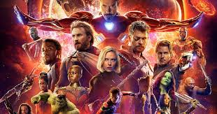

1)Spider-Man en ‘Civil War’:
Se dice que Spider-Man fue el peón en ‘Civil War’ ya que servía para que disminuya la lucha entre los Vengadores (Tony Stark sabía que sus antiguos amigos no atacarían a Peter, por el hecho de que solamente es menor, todo esto para que el otro equipo se relaje en la pelea).

2)Nick Furia tiene poderes psíquicos:
Se dice que es un mutante de alto nivel. Esta teoría es comprobada ya que se dice que no existen individuos con poderes precognitivos, esto dando referencia a los archivos de la compañía. Lo que se dice es que Furia pudo haber ocultado su archivo para que no lo usen sin su derecho.

3)Los Chitauri están entre nosotros:
Se dice que no tuvieron la victoria en la batalla de Nueva York los Vengadores. Se dice que esa tal victoria fue una distracción de los Chitauri para llevar a cabo una invasión. Se dice que reemplazan a personas influyentes en nuestra tierra (superhéroes incluidos en esas personas reemplazadas) para llevar a cabo una conquista silenciosa. Todo esto lo comprueba cuando el material original indica que los Chitauari cambian de forma.
4)Loki nunca perdió el combate:
Se dice que su ataque en ‘Vengadores’ fue una distracción con el objetivo de ser devuelto a Asgard después de su exilio, también se dice que Loki firmó una alianza con Thanos aprovechando su derrota para volver a su hogar con el Teseracto. Esto se explica ya que la derrota para Loki fue la mejor victoria para el porque con eso conseguiría sacar el Teseracto de la Tierra y de la protección de SHIELD/HYDRA y acércalo a Asgard.

5)Stan Lee es el vigilante:
Hay una teoría que explica la razón por la que Stan Lee aparece en el UCM, la cual es que el líder/vigilante de la Tierra puede intervenir en eventos de los mortales, aunque no lo haga. Se dice que Stan Lee está en contacto con el resto de Vigilantes, que, los Vigilantes, preguntan sus experiencias con los héroes de la Tierra.

6)HYDRA manípulo a los vengadores desde un principio:
Se dice que el grupo terrorista universal fue el responsable de la formación de los Vengadores con el objetivo de eliminar a los superhéroes de la faz de la Tierra.

Blogs recomendados de nuestra web